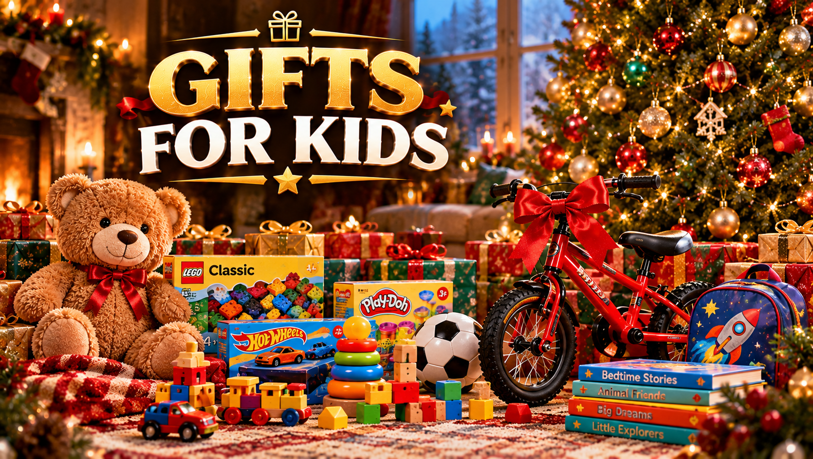

Christmas Gifts for Kids 2026: Best Ideas by Age
Published October 12, 2026 · Updated October 12, 2026 · By EventBuzz Team

The right Christmas gift for a child is not the most expensive toy on the shelf — it is the one that matches exactly where they are right now. A toy that is too advanced frustrates; one that is too babyish gets ignored. This guide to Christmas gifts for kids in 2026 is organized by age — toddlers, little kids, big kids and tweens — so you can jump straight to the section that fits, pick something they will play with for months, and avoid the gifts that end up forgotten by New Year.
How to Pick the Right Gift by Age
A quick framework before the age-by-age lists:
- Follow the age label: toy age ratings exist for safety and developmental fit — respect them, especially for children under 3.
- Think in months of play: the best gifts offer open-ended play (building sets, art supplies, dress-up) rather than a single scripted experience.
- Consider the parents: noisy toys, glitter explosions and 200-piece sets with no storage test everyone's patience. A gift the parents appreciate too is a gift that gets used more.
- One big, a few small: kids remember the one exciting main gift; small stocking fillers round out the morning without doubling the clutter.
Christmas Gifts for Ages 0-2
Toddlers explore with their senses, so the best gifts are safe to chew, fun to bang, and satisfying to manipulate. Soft stacking blocks, large-piece shape sorters, push-and-pull toys for new walkers, textured sensory balls, and sturdy board books all fit this stage. Musical toys with simple buttons delight at this age — choose ones with a volume control or an off switch for the parents' sake. Avoid anything with small detachable parts, button batteries accessible without a screw, or long cords. At this age, wrapping paper and boxes are half the entertainment, so do not overspend on the gift itself.
Christmas Gifts for Ages 3-5
Preschoolers live in their imaginations, so gifts that fuel pretend play win: play kitchens with accessories, doctor or tool kits, dress-up costumes, dollhouses, and train or car track sets. This is also the perfect window for first art supplies — chunky crayons, washable markers, big sticker books, and modelling clay (washable, always washable). Simple puzzles (24-48 pieces), beginner board games the whole family can play, and outdoor toys like a tricycle, a balance bike or a bubble machine burn off energy and get used daily. If you are buying for someone else's child, check with the parents about screen-free preferences first.
Christmas Gifts for Ages 6-8
School-age kids are ready for gifts with a bit of challenge. Building sets (the classic interlocking bricks in themed sets), beginner STEM kits, science experiment boxes, and coding toys that teach logic through play are all strong picks. Chapter books and graphic novels feed new readers; a personal bookshelf or a reading light makes reading feel like an event. Craft kits — friendship bracelet makers, paint-by-number sets, build-your-own model kits — keep hands busy on winter afternoons. Sports gear sized for their age (a junior basketball, a soccer ball, roller skates with protective gear) encourages the active play this age group needs.
Christmas Gifts for Ages 9-12
Tweens sit between kid and teen, so aim for "grown-up but fun." Advanced building and robotics kits, art supply sets with real quality materials, beginner musical instruments, and sports equipment for the team they follow all work. Tech-lite gifts — a kid-friendly smartwatch, wireless earbuds, an instant camera, or a quality pair of headphones — feel mature without handing over a full smartphone. Books get more sophisticated here too: adventure series, illustrated nonfiction about space or history, and journals for the writers. Gift cards to bookstores or craft stores let picky tweens choose while still feeling like a real gift.
Clutter-Free Gift Ideas Parents Love
If you want to delight the child without overwhelming the house, go consumable or experiential:
- Experience gifts: zoo or museum memberships, trampoline park passes, movie tickets, or a "day out with aunt/uncle" coupon.
- Subscriptions: monthly craft boxes, book clubs, or science kits that arrive all year — one gift that keeps giving.
- Consumables: art supply refills, baking kits, bath bombs, or their favourite snacks in festive packaging.
- Classes: swimming lessons, a pottery workshop, or a coding camp session matched to their interests.
Santa, Safety and Sanity Tips
- Check batteries: buy the batteries the toy needs and install them Christmas Eve — nothing deflates a morning like a dead toy.
- Read the age label: especially for under-3s, where choking hazards are the main risk.
- Keep receipts: duplicates happen; gift receipts make exchanges painless.
- Coordinate with family: a quick group message avoids three identical gifts from three relatives.
- Wrap in layers: kids love the unwrapping — nested boxes and multiple small packages stretch the excitement.
Pair the morning with some together time too: our Christmas Crafts & Activities for Kids guide has easy projects for the days after the presents are opened.
Frequently Asked Questions
How many Christmas gifts should a child get?
There is no rule, but many families use the "something they want, something they need, something to wear, something to read" rhyme to keep things balanced and clutter under control.
What is the best age to start Santa gifts?
Most families start the Santa tradition around age 2-3, when children begin to understand stories and anticipation. Keep Santa's gifts modest so siblings and friends receive comparable presents.
What gifts should I avoid for toddlers?
Avoid toys with small parts, button batteries that are not screwed in, long strings or cords, and anything with sharp edges. Always check the manufacturer's age rating and supervise play.
What do 10-12 year olds want for Christmas?
Tweens typically want hobby gear, tech accessories like earbuds or a smartwatch, sports equipment, quality art supplies, and gift cards that let them choose. Ask subtly — they have strong opinions.
Are experience gifts good for kids?
Yes — zoo memberships, class passes, and special outings often become favourite memories and create zero clutter. Pair the experience with a small physical token to unwrap on Christmas morning.
When should I buy kids' Christmas gifts?
Popular toys sell out, so shop early — October through early November is ideal. Christmas Day 2026 is Friday, December 25, and shipping cutoffs tighten in mid-December.
Conclusion
Match the gift to the age, favour open-ended play over one-time thrills, and remember that the wrapping and the morning matter as much as the toy. Get those right and you will be the favourite gift-giver of Christmas 2026.
More Christmas help from EventBuzz:
Happy gifting — may their Christmas morning be full of wide eyes and happy noise!
Gift Presentation Picks
Gift bags, boxes and cards that make any Christmas gift look extra special.


Prices shown at the time of publishing and can change. Links take you to AliExpress, where shipping and delivery details are shown.